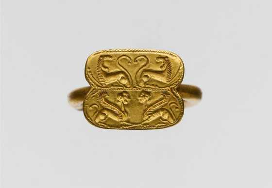
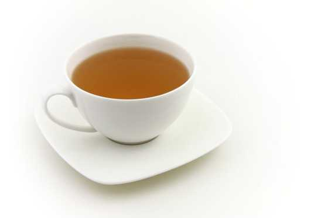
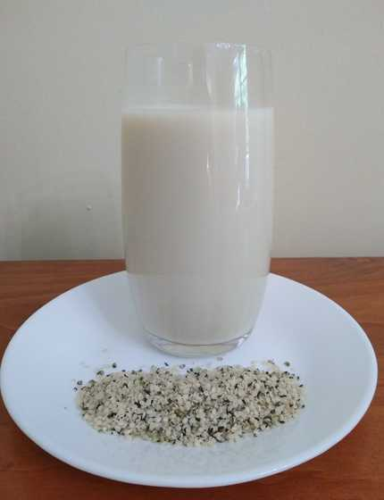
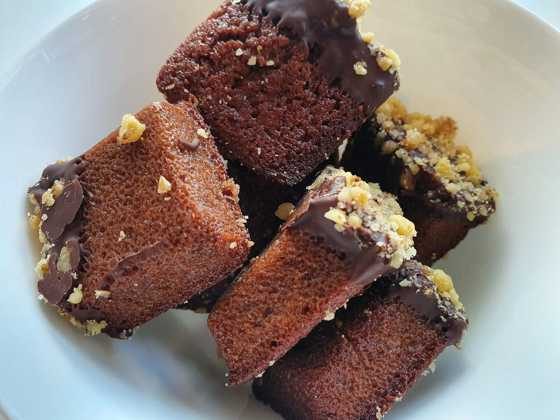
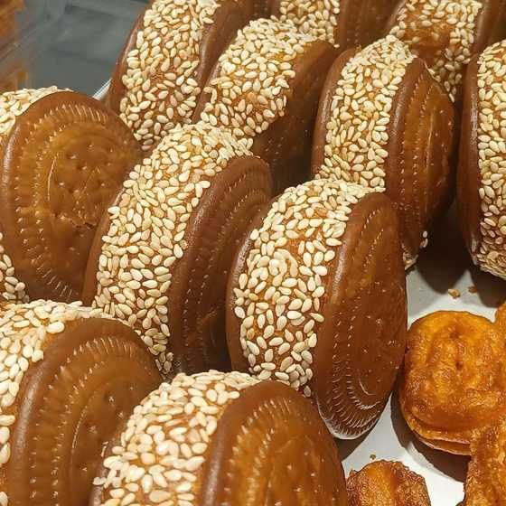
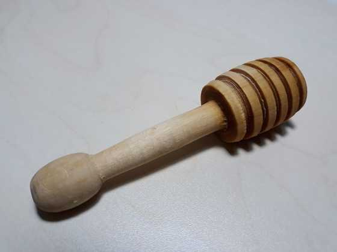
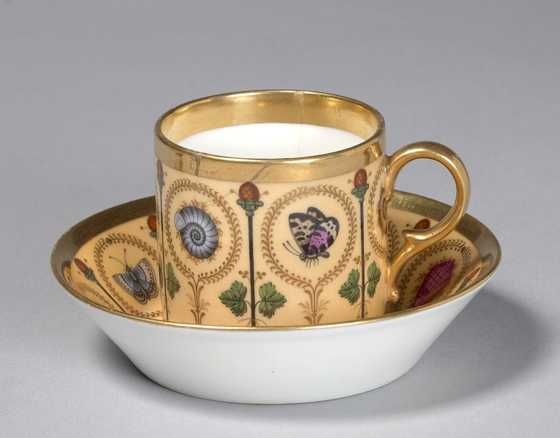

TAKEOUT CAFE / 長崎県大村市
Sei Tesoro Cafe
手のひらに載せて持ち帰る、ささやかな宝物をひとつ。
お店のこと
Sei Tesoro Cafe は、2024年7月6日に長崎県大村市宮小路の2GSサポート敷地内でオープンした、テイクアウトのカフェです。店内で長居するのではなく、飲み物やおやつを持ち帰って、それぞれの場所で味わう。そんな過ごし方のためのお店です。
店名の「Tesoro」はイタリア語で「宝物」を意味する言葉です。店名の由来についてお店からの説明は確認できていないため、ここでは制作側のイメージとして、「毎日の中の小さな楽しみを、紙袋に入れて渡すカフェ」という見立てでこのページを組み立てました。
確認できた事実: Instagramのプロフィールに「2024年7月6日、長崎県大村市宮小路3丁目1998-2GSサポート敷地内にテイクアウトカフェをオープン」との記載があります。

メニュー
テイクアウトのカフェとして、飲み物や甘いものをご用意していると思われます。確かな内容は確認できていないため、下の写真はすべてイメージです。











- メニュー詳細・価格
- 準備中
- 営業時間・定休日
- 準備中
- 電話
- 準備中
写真はフリー素材のイメージで、店舗の実際の様子・商品ではありません。実際の写真はご提供いただいたものに差し替えます。
口コミイメージ例
以下は創作のイメージ例であり、実在のお客様の声ではありません。
イメージ例仕事帰りに寄って、温かい一杯を受け取りました。帰り道の楽しみが増えます。
イメージ例テイクアウトなので、公園で飲みました。ちょっとしたご褒美になります。
イメージ例手みやげにお菓子をお願いしました。渡した相手に喜ばれました。
アクセス
- 住所
- 〒856-0807 長崎県大村市宮小路3丁目1998 2GSサポート敷地内
- @seitesorocafe
- 電話
- 準備中
写真クレジット
- images/beans.jpg「Roasted Coffee Beans in Hermetic Jar」Pierre Camateros / CC BY-SA 3.0
- images/cup.jpg「Cup and Saucer - 1919.172」Cleveland Museum of Art / CC0 1.0
- images/ring.jpg「Gold ring MET DP142764(トリミング)」The Metropolitan Museum of Art / CC0 1.0
- images/choco.jpg「Chocolate raspberry dessert」Funknendai / CC0
- images/cocoa.jpg「Hot chocolate (Unsplash)」Alisa Anton / CC0
- images/financier.jpg「Chocolate financier」Syced / CC0
- images/honey.jpg「Honey dipper」Matankic / CC0
- images/latte.jpg「Pumpkin latte Tullys」さえぼー / CC0
- images/milk.jpg「Hemp milk with hemp seeds 2」Mx. Granger / CC0
- images/mocha.jpg「Mocha Cake - Djanogly Café, Tate Britain」Andy Li / CC0
- images/sesame.jpg「Pumpkin cakes」Fumikas Sagisavas / CC0
- images/tea.jpg「Cup of tea isolated on white background」Petr Kratochvil / CC0
- images/toast.jpg「Toasted oatmeal bread with butter and apple butter」Daderot / CC0